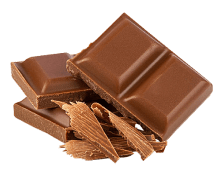
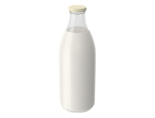
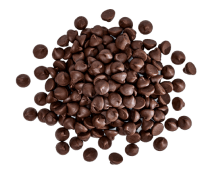

<!-- Tetiana -->
<section class="components-section">
    <div class="components-container">
        <h2 class="components-heading">It all adds up to one exceptional <span class="components-accent">taste</span>
            sensation</h2>
        <p class="components-text">At Simply Chocolate, we believe that the secret to exceptional chocolate is in the
            details. From the sourcing of the
            finest ingredients to the careful crafting of each individual piece, every step of our process adds up to
            one
            exceptional taste sensation.
        </p>
        <ul class="components-list">
            <li class="components-flip-card card-1">
                <div class="components-card-inner">
                    <div class="components-card-front">
                        <div class="components-img-container">
                            <picture>
                                <source srcset="../img/desktop/unique-components/milk-chocolate-desktop-2x.png" media="(min-width: 1200px) and
                                                                                            (min-device-pixel-ratio: 2),
                                                                                            (min-resolution: 192dpi),
                                                                                            (min-resolution: 2dppx)">
                                <source srcset="../img/desktop/unique-components/milk-chocolate-desktop-1x.png"
                                    media="(min-width: 1200px)">
                                <source srcset="../img/tablet+mobile/unique-components/milk-chocolate-tab+mob-2x.png"
                                    media="(min-device-pixel-ratio: 2),
                                                                                            (min-resolution: 192dpi),
                                                                                            (min-resolution: 2dppx)">
                                
                            </picture>
                        </div>
                        <h3 class="components-card-heading">Milk chocolate</h3>
                    </div>
                    <div class="components-card-back">
                        <div class="components-info-content">
                            <h3 class="components-back-heading">Milk chocolate</h3>
                            <div class="components-description">
                                <div class="components-name">Chocolate</div>
                                <div class="components-benefits">The benefits</div>
                            </div>
                            <p class="components-info-text" id="info-content">Milk chocolate is a solid chocolate
                                confectionery containing cocoa, sugar
                                and milk. It is the most consumed type of
                                chocolate. Chocolate was originally sold and consumed as a beverage in pre-Columbian
                                times. Although
                                four-fifths of all
                                milk chocolate is sold in the United States and Europe, increasingly large amounts are
                                consumed in China
                                and Latin
                                America.
                            </p>
                        </div>
                    </div>
                </div>
            </li>
            <li class="components-flip-card card-2">
                <div class="components-card-inner">
                    <div class="components-card-front">
                        <div class="components-img-container">
                            <picture>
                                <source srcset="../img/desktop/unique-components/milk-desktop-2x.png" media="(min-width: 1200px) and
                                                                                (min-device-pixel-ratio: 2),
                                                                                (min-resolution: 192dpi),
                                                                                (min-resolution: 2dppx)">
                                <source srcset="../img/desktop/unique-components/milk-desktop-1x.png"
                                    media="(min-width: 1200px)">
                                <source srcset="../img/tablet+mobile/unique-components/milk-tab+mob-2x.png" media="(min-device-pixel-ratio: 2),
                                                                                (min-resolution: 192dpi),
                                                                                (min-resolution: 2dppx)">
                                
                            </picture>
                        </div>
                        <h3 class="components-card-heading">Milk</h3>
                    </div>
                    <div class="components-card-back">
                        <h3 class="components-back-heading">Milk</h3>
                        <div class="components-description">
                            <span class="components-name">Milk</span>
                            <span class="components-benefits">The benefits</span>
                        </div>
                        <p class="components-info-text">Milk is a white liquid food produced by the mammary glands of
                            mammals. It is the primary source of nutrition for young
                            mammals (including breastfed human infants) before they are able to digest solid
                            food.Early-lactation milk, which is
                            called colostrum, contains antibodies that strengthen the immune system, and thus reduces
                            the risk of many diseases.
                            Milk contains many nutrients, including protein and lactose.</p>
                    </div>
                </div>
            </li>
            <li class="components-flip-card card-3">
                <div class="components-card-inner">
                    <div class="components-card-front">
                        <div class="components-img-container">
                            <picture>
                                <source srcset="../img/desktop/unique-components/nuts-desktop-2x.png" media="(min-width: 1200px) and
                                                        (min-device-pixel-ratio: 2),
                                                        (min-resolution: 192dpi),
                                                        (min-resolution: 2dppx)">
                                <source srcset="../img/desktop/unique-components/nuts-desktop-1x.png"
                                    media="(min-width: 1200px)">
                                <source srcset="../img/tablet+mobile/unique-components/nuts-tab+mob-2x.png" media="(min-device-pixel-ratio: 2),
                                                        (min-resolution: 192dpi),
                                                        (min-resolution: 2dppx)">
                                
                            </picture>
                        </div>
                        <h3 class="components-card-heading">Nuts</h3>
                    </div>
                    <div class="components-card-back">
                        <div class="components-info-content">
                            <h3 class="components-back-heading">Nuts</h3>
                            <div class="components-description">
                                <div class="components-name">Nuts</div>
                                <div class="components-benefits">The benefits</div>
                            </div>
                            <p class="components-info-text">Almonds, pistachios, and walnuts are some types of nuts that
                                contain
                                healthy nutrients. When eaten as part of a
                                nutrient-dense diet, these 9 nuts may offer benefits such as reducing your risk of heart
                                disease.
                                They’re a good source
                                of fiber, healthy fats, and plant protein. Plus, they’re great on their own, paired with
                                fruit, or
                                added to dishes like
                                salads, desserts, and grains.
                            </p>
                        </div>
                    </div>
                </div>
            </li>
            <li class="components-flip-card card-4">
                <div class="components-card-inner">
                    <div class="components-card-front">
                        <div class="components-img-container">
                            <picture>
                                <source srcset="../img/desktop/unique-components/semi-sweet-desktop-2x.png" media="(min-width: 1200px) and
                                                        (min-device-pixel-ratio: 2),
                                                        (min-resolution: 192dpi),
                                                        (min-resolution: 2dppx)">
                                <source srcset="../img/desktop/unique-components/semi-sweet-desktop-1x.png"
                                    media="(min-width: 1200px)">
                                <source srcset="../img/tablet+mobile/unique-components/semi-sweet-tab+mob-2x.png" media="(min-device-pixel-ratio: 2),
                                                        (min-resolution: 192dpi),
                                                        (min-resolution: 2dppx)">
                                
                            </picture>
                        </div>
                        <h3 class="components-card-heading">Semi-sweet chocolate</h3>
                    </div>
                    <div class="components-card-back">
                        <div class="components-info-content">
                            <h3 class="components-back-heading">Sweet chocolate</h3>
                            <div class="components-description">
                                <div class="components-name">Sweet chocolate</div>
                                <div class="components-benefits">The benefits</div>
                            </div>
                            <p class="components-info-text">Semi-sweet chocolate has a cocoa solid content of 35 to 65%.
                                One of the
                                best ways to gain an understanding of this type
                                of chocolate is to compare it to a different type of chocolate. Semisweet is darker than
                                milk
                                chocolate. In a taste
                                comparison, it has a slightly bitter taste whereas milk chocolate is sweeter and more
                                mellow. This
                                delectable flavor of
                                chocolate is very versatile.
                            </p>
                        </div>
                    </div>
                </div>
            </li>
        </ul>
    </div>
</section>